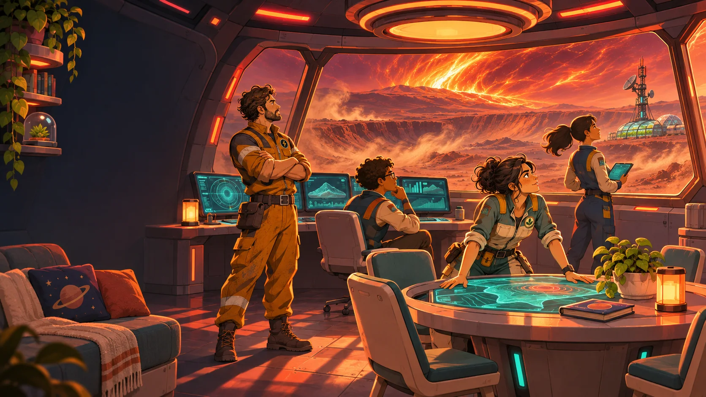
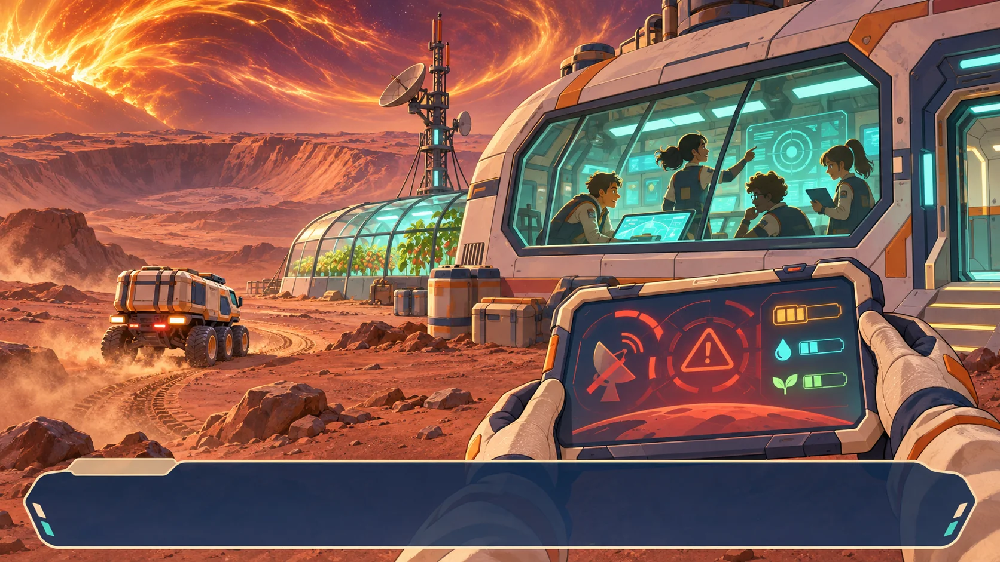
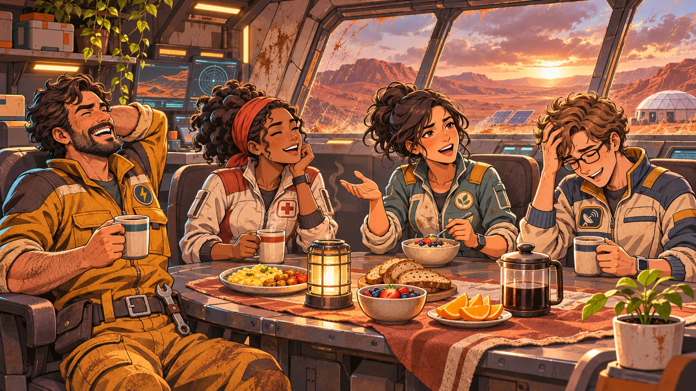
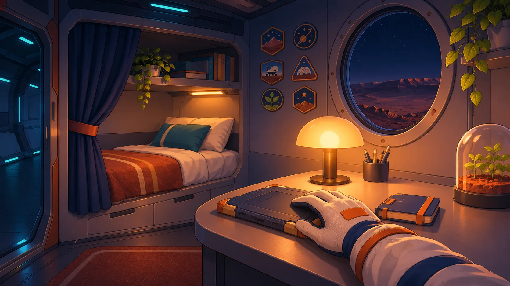

NASA-GROUNDED MARS VISUAL NOVEL • AGES 7–12
TWIN SOLS ECHO COUNCIL
Keep the station alive. Keep the crew together.
Real data is always labelled LIVE, CACHED, or ARCHIVED. Echo Station is fictional.

NASA-GROUNDED MARS VISUAL NOVEL • AGES 7–12
Keep the station alive. Keep the crew together.
Real data is always labelled LIVE, CACHED, or ARCHIVED. Echo Station is fictional.


Welcome to Echo Station.

YOUR ECHO STATION ENDING
MISSION FILE
WAKE-UP BRIEFING

CONSEQUENCE

LIGHTS DOWN
You set the mission tablet aside.